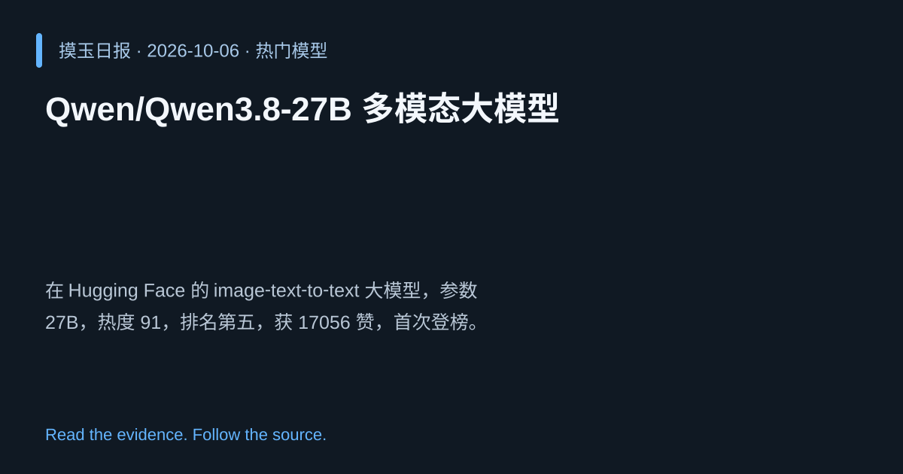

2026-10-06 · Asia/Shanghai · 热门模型 · #5
Qwen/Qwen3.8‑27B 多模态大模型
Qwen/Qwen3.8-27B
在 Hugging Face 的 image‑text‑to‑text 大模型，参数 27B，热度 91，排名第五，获 17056 赞，首次登榜。
为什么值得关注
大规模多模态模型在生成任务中表现突出，广受关注显示行业趋势。
- 27B 参数规模，支持图文联合理解与生成
- 热度 91/100，社区点赞超 1.7 万
- 首次登榜，展示 Qwen 系列影响力

热度 91.0 / 100；排名与评分保留该期记录。